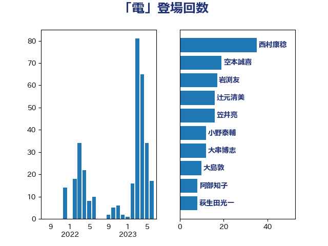

単語「電」

| 梶山弘志 | 自由民主党 | 18 回 |
| 大串博志 | 立憲民主党 | 12 回 |
| 阿部知子 | 立憲民主党 | 10 回 |
| 大島敦 | 立憲民主党 | 8 回 |
| 萩生田光一 | 自由民主党 | 8 回 |
| 秋本真利 | 自由民主党 | 7 回 |
| 岩渕友 | 日本共産党 | 6 回 |
| 小林鷹之 | 自由民主党 | 4 回 |
| 菅直人 | 立憲民主党 | 4 回 |
| 藤岡隆雄 | 立憲民主党 | 4 回 |
| 赤羽一嘉 | 公明党 | 4 回 |
| 土田慎 | 自由民主党 | 3 回 |
| 山本博司 | 公明党 | 3 回 |
| 山岸一生 | 立憲民主党 | 2 回 |
| 岸田文雄 | 自由民主党 | 2 回 |
| 木村英子 | れいわ新選組 | 2 回 |
| 森屋隆 | 立憲民主党 | 2 回 |
| 河野太郎 | 自由民主党 | 2 回 |
| 笠井亮 | 日本共産党 | 2 回 |
| 金子俊平 | 自由民主党 | 2 回 |
| 青柳陽一郎 | 立憲民主党 | 2 回 |
| こやり隆史 | 自由民主党 | 1 回 |
| 宮崎雅夫 | 自由民主党 | 1 回 |
| 寺田静 | 無所属 | 1 回 |
| 小泉進次郎 | 自由民主党 | 1 回 |
| 山崎誠 | 立憲民主党 | 1 回 |
| 山田太郎 | 自由民主党 | 1 回 |
| 岡本あき子 | 立憲民主党 | 1 回 |
| 工藤彰三 | 自由民主党 | 1 回 |
| 平山佐知子 | 無所属 | 1 回 |
| 杉田水脈 | 自由民主党 | 1 回 |
| 森山浩行 | 立憲民主党 | 1 回 |
| 浅野哲 | 国民民主党 | 1 回 |
| 浜野喜史 | 国民民主党 | 1 回 |
| 滝波宏文 | 自由民主党 | 1 回 |
| 熊野正士 | 公明党 | 1 回 |
| 玉木雄一郎 | 国民民主党 | 1 回 |
| 石川昭政 | 自由民主党 | 1 回 |
| 空本誠喜 | 日本維新の会 | 1 回 |
| 美延映夫 | 日本維新の会 | 1 回 |
| 菅義偉 | 自由民主党 | 1 回 |
| 藤木眞也 | 自由民主党 | 1 回 |
| 谷田川元 | 立憲民主党 | 1 回 |
| 鈴木俊一 | 自由民主党 | 1 回 |
| 青柳仁士 | 日本維新の会 | 1 回 |
| 音喜多駿 | 日本維新の会 | 1 回 |